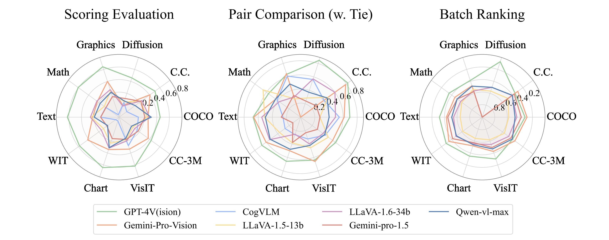
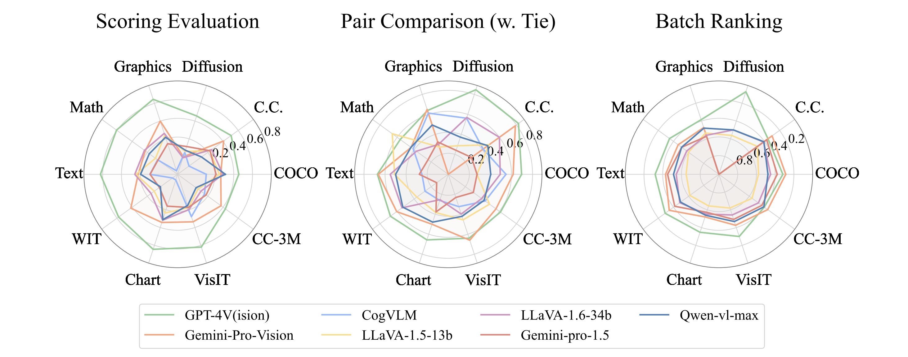

- A Benchmark. We are the first to develop a comprehensive benchmark MLLM-AS-A-JUDGE in multimodal domains, with human annotations to assess the judging capability of MLLMs in tasks of Scoring Evaluation, Pair Comparison and Batch Ranking.
- Two Datasets. We curate two human preference datasets with high-quality questions MLLM-AS-A-JUDGE-HQ and MLLM-AS-A-JUDGE-HARD dataset with hallucination instances. They can serve as a rigorous testing ground to facilitate the development of MLLMs.
- Findings and Implications. Our evaluation of mainstream MLLMs reveals that while MLLMs exhibit alignment with human judgments in pair comparison tasks, notable discrepancies can be found in scoring evaluation and batch ranking. Furthermore, our findings reveal that MLLMs exhibit a range of biases and hallucinations, along with inconsistent judgments during the evaluation process, representing significant hurdles in establishing MLLMs as reliable judges.